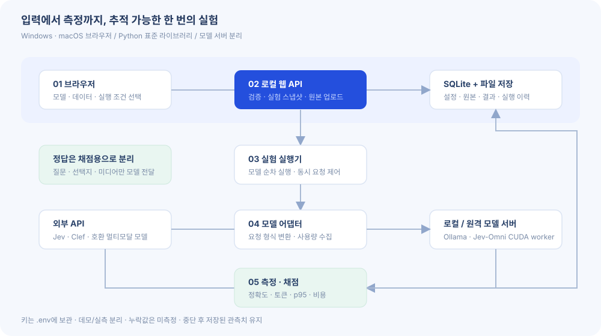

HOW IT WORKS
구조도와 사용 설명
같은 입력을 비교하고, 결과가 나온 조건을 보존합니다.

처음 사용하는 순서
- 데모 실행: API 키 없이 모의 실험을 실행해 결과 화면을 확인합니다.
- 모델 연결: API 주소·정확한 모델 이름·키 환경변수 이름을 설정합니다.
- 데이터셋 등록: 미디어를 먼저 업로드한 뒤 질문·선택지·정답을 연결합니다.
- 벤치마크: 모델, 반복 수, 동시 요청 수를 선택합니다.
- 결과 분석: 전체 성능과 개별 사례를 보고 JSON/CSV로 보존합니다.
토큰은 어떻게 비교하나요?
API가 보고한 토큰, 로컬 모델 입력 길이, 데모 추정치를 구분합니다. 모델별 토큰화 방식이 다르므로 토큰 수만으로 연산량을 판단하지 않습니다.
데이터 1건의 정확도·시간·비용과 함께 보세요. 알 수 없는 사용량은 ‘—’로 표시합니다.
출력 문장을 생성하지 않는 판단 모델의 속도는 초당 판단 수와 결과를 받기까지의 시간으로 비교합니다.
p50과 p95는 무엇인가요?
p50은 응답 시간의 중앙값입니다. p95가 2초라면 성공 요청의 약 95%가 2초 이내에 끝났다는 의미입니다.
전체 요청 시간에는 앱 전처리·API 통신·결과 정리가 포함됩니다. GPU 계산 시간과 같지 않습니다.
워밍업은 성능 통계에서 제외하지만 API 비용은 발생할 수 있어 따로 기록합니다.
정확도와 확률의 신뢰도
| 지표 | 읽는 방법 |
|---|---|
| Accuracy | 정답이 있는 성공 샘플 중 맞힌 비율. 첫 반복만 사용합니다. |
| 공통 정답률 | 모든 모델이 성공한 같은 샘플을 비교합니다. 표본 수를 함께 보세요. |
| Macro-F1 | 클래스별 F1의 평균. 클래스 의미가 고정된 분류 과제에 사용합니다. |
| ECE | 예측 확률과 실제 정답률의 간격. 80%라고 한 사례가 실제 80% 맞는지 확인합니다. |
| Brier | 선택지 확률과 정답의 제곱 오차. 이 앱은 다중 클래스 합 방식입니다. |
| 판단/초 | 모델 구간의 실제 경과 시간당 성공한 질문 수. 동시 요청 시간을 단순 합산하지 않습니다. |
모델이 실제로 본 입력을 확인하세요
API에 원본 파일을 보내더라도 내부 전처리는 모델마다 다릅니다. 현재 웹앱은 원본을 보존해 전달하며 공통 리사이즈나 프레임 추출을 강제하지 않습니다.
- Jev: 직접 이미지 입력. 오디오·영상 파일은 해당 연결의 지원 범위 밖입니다.
- Clef-omni: 제공자 규약에 따라 이미지·오디오·영상을 전달합니다.
- Jev-Omni worker: 영상은 기본 16개 무음 프레임. 오디오는 30초 제한을 검사합니다.
- 실제 프레임 시각 등은 worker가 반환한 input_manifest에서 확인합니다.
코드에서 어디를 수정하나요?
| 변경하려는 기능 | 파일 | 원칙 |
|---|---|---|
| 새 모델 연결 | bench/providers.py | 정답 없이 입력 변환, 미제공 값은 None |
| 새 데이터 포맷 | bench/datasets.py · scripts/convert_dataset.py | 정답·선택지·미디어 대응 검사 |
| 새 평가 지표 | bench/metrics.py | 분모와 반복 기준 명시 |
| 실험 제어 | bench/runner.py | 결과 저장 후 중단·재개 |
| 화면 | web/app.js · web/styles.css | 사용자 문자열 이스케이프, 키 값 미표시 |
이번 버전의 범위
요청당 질문은 1개입니다. 자동 토큰 추정, 공식 리더보드 제출, 신뢰구간, 여러 사용자의 로그인은 포함하지 않습니다. 공개 데이터는 로컬 변환을 지원하며, 원본 분할과 공식 평가 조건은 별도로 확인해야 합니다.
기본 웹앱은 Windows/macOS에서 실행할 수 있습니다. 선택형 GPU worker는 CUDA 환경이 필요합니다. 실제 API 키와 GPU가 없는 환경에서는 모델 성능 자체를 검증할 수 없습니다.